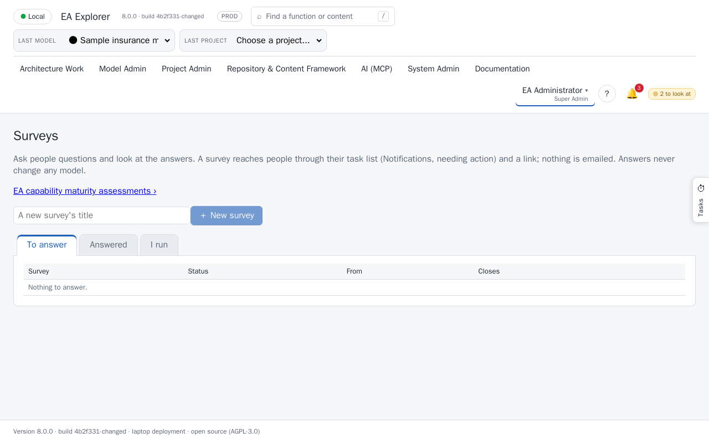

Design a survey
For: Project Admin
Sections and questions, who answers and by when.

#/surveysWhy do this
Surveys gather what only people know. A good design keeps it short, groups questions into sections, and uses conditions so people only see what applies to them.
Some of the most useful architecture knowledge is in people's heads. Surveys and maturity assessments gather it in a form that can be compared over time.
In TOGAF terms: The Preliminary phase and the architecture capability: gathering what people know and judging the maturity of the practice. See EA Explorer and the TOGAF Standard.
The goal: A survey asks the right people the right questions.
Before you start You need the Project Admin role.
Steps
- Open Project Admin › Surveys and maturity › Surveys, New.
- Add sections and questions.
- Pick who answers and by when; Send.